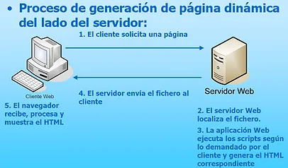
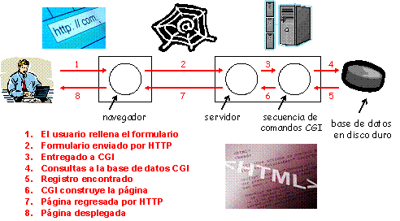

Las páginas Web pueden generarse dinámicamente mediante varias secuencias de comandos en el servidor. Una vez que el navegador las recibe, las trata como páginas HTML normales y simplemente las despliega. Por ejemplo, cuando un usuario rellena los distintos campos de un formulario y hace clic en el botón de envío, se envía un mensaje al servidor con toda esta información. Ahora esta información deberá ser entregada a un programa o a una secuencia de comandos para que los procesen. Por lo general, el procesamiento implica el uso de la información proporcionada por el usuario para buscar un registro en una base de datos del disco del servidor y generar una página HTML personalizada para regresarla al cliente.

Perl CGI
La forma tradicional de manejar formularios y otras páginas Web interactivas es un sistema estándar denominado CGI (Common Gateway Interface) o interfaz de puerta de enlace común. En una aplicación CGI, el servidor Web pasa las solicitudes del cliente a un programa externo. La salida de dicho programa es enviada al cliente en lugar del archivo estático tradicional. Por lo general, estos programas son secuencias de comandos escritas en lenguaje Perl, aunque algunas veces se emplea Python e incluso lenguajes compilados
(C, C++, Java, etc.).

PHP
Es un lenguaje de programación utilizado para la creación de sitio web. PHP es un acrónimo recursivo que significa “PHP Hypertext Pre-processor”, (inicialmente se llamó Personal Home Page). Surgió en 1995, desarrollado por PHP Group.
PHP es un lenguaje de script interpretado en el lado del servidor utilizado para la generación de páginas web dinámicas, embebidas en páginas HTML y ejecutadas en el servidor. PHP no necesita ser compilado para ejecutarse. Para su funcionamiento necesita tener instalado Apache o IIS con las librerías de PHP. La mayor parte de su sintaxis ha sido tomada de C, Java y Perl con algunas características específicas. Los archivos cuentan con la extensión (php).